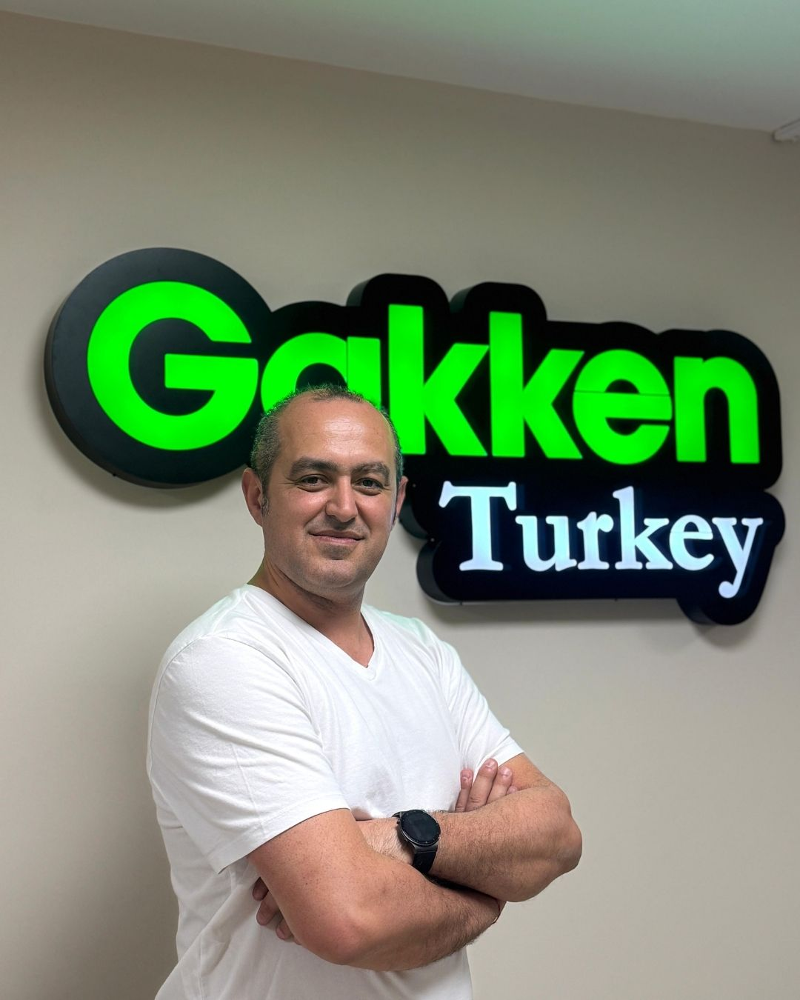
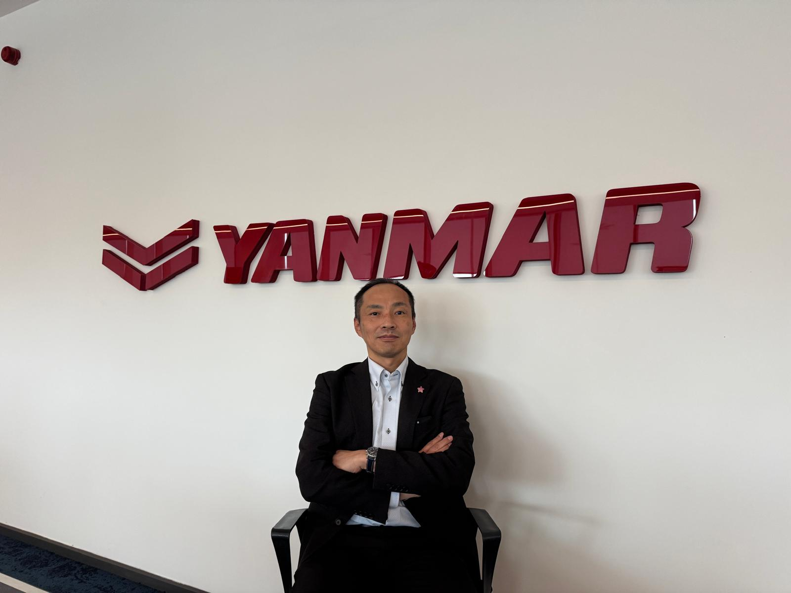
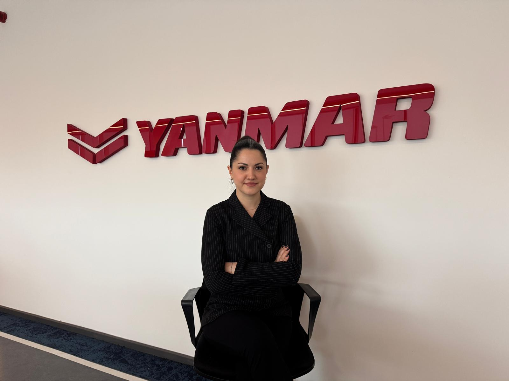
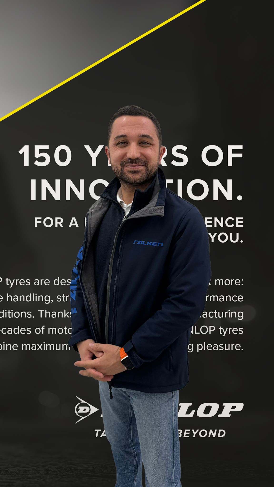
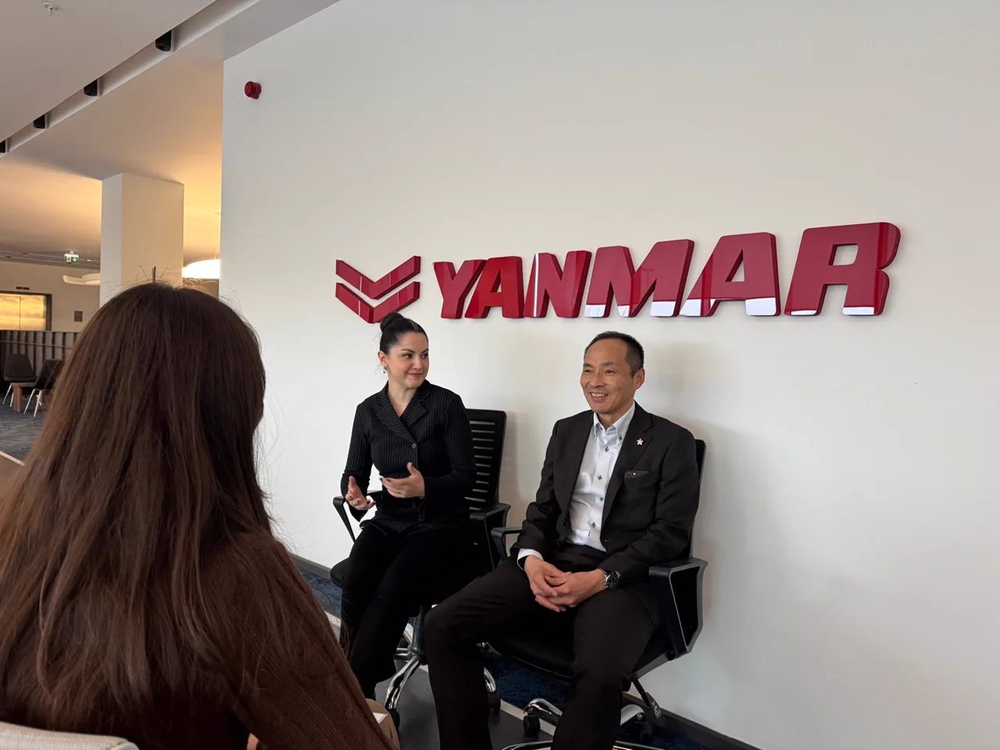

01
Net Düşün
Think Clearly
Doğru düşün, çekirdeğe netlik getir.
Türkiye'de İlk ve Tek
Japon şirketlerinin 80 yıllık ortak düşünme dili — global organizasyonlarda kullanılan Mantıksal Düşünme metodu.
KARAR ALMA · PROBLEM ÇÖZME · EKİP İLETİŞİMİ
80 yıl · 17 ülke · 110+ şirket · 29.184 çalışan
Japon menşeli global gruplar
Growth Barrier
Hızlı büyüyen şirketlerin önündeki engel: aynı çerçevede düşünmeyen ekipler. Toplantılar uzar, kararlar yavaşlar, departmanlar kopuk kalır.
60 dakika konuşulur, karar çıkmaz. Ekip farklı boyutlardan tartışır.
Hangi yöne gideceğimiz net değil. Aksiyon ertesi haftaya kalır.
Pazarlama ve Satış aynı veriden farklı sonuç çıkarır. Ortak resim yok.
Her birim kendi diliyle konuşur. Hizalanma manuel ve yorucu.
Bu engelin tek adı vardır: ortak bir düşünme dilinin eksikliği.
Mantıksal Düşünme Nedir?
Growth Barrier'ı kıran tek şey, organizasyonun her katmanında ortak bir düşünme dilidir.
Her ekibin aynı çerçeveyle düşünmesi.
Kararların aynı standartla alınması.
Hızlı uygulama + sürdürülebilir büyüme.
Bu ortak dil bir kavramın markasıdır: Logical Thinking.
Data-Driven Authority
Global iş dünyasının kararlarını AI çağına taşıyan temel yetkinlik.
Kolon A · WEF 2025
Kaynak: World Economic Forum — Future of Jobs Report 2025
Kolon B · AI Çağı Geçişi
Şimdiye Kadar
YZ Çağında
YZ çağında, lojik düşünme yeteneği rekabet gücünün kaynağıdır.
Kolon C · Ölçülen Etki
Sürdürülebilir Büyüme
İnsan kaynağına stratejik yatırım yapan şirketler, rakiplerine kıyasla daha güçlü ve uzun vadeli büyüme elde eder.
Kaynak: McKinsey & Company — "The value of getting human capital right" (2019)
Yetenekli Çalışanların Etkisi
Çalışan bağlılığı yüksek şirketler, düşük bağlılığa sahip şirketlere kıyasla %23 daha yüksek kârlılık elde eder.
Kaynak: Gallup — "How Employee Engagement Drives Growth" (2013)
İnsan kaynağına yapılan yatırım, bir maliyet değil — şirket değerini maksimuma taşıyan yatırımdır.
GLOBIS Tezi · Manifesto
Gakken, sürdürülebilir büyüme için 4 büyüme adımı tanımlar. Her adım bir öncekinin üzerine inşa olur.
01
Think Clearly
Doğru düşün, çekirdeğe netlik getir.
02
Work Together
Hizalan, sonuç için işbirliği yap.
Sonraki faz
03
Develop People
İnsanları geliştir, organizasyonu yönetecek güç oluştur.
Sonraki faz
04
Drive Change
Değişimi yönet, geleceği yarat.
Sonraki faz
"Logical thinking is the starting point of all growth — and the key to maximizing organizational results."
Mantıksal düşünme, tüm büyümenin başlangıç noktasıdır — ve organizasyonel sonuçları maksimize etmenin anahtarıdır.
Gakken yalnızca eğitim vermez — davranış verilerini ölçer, analiz eder ve organizasyonun bir sonraki gelişim alanını birlikte belirler.
Eğitimle değişen 3 günlük iş senaryosu — düşünme tekniği uygulanmadan önce ve sonra.
60dk toplantı, karar yok
Konu dağılır, herkes farklı boyutu konuşur. Toplantı uzar, aksiyon çıkmaz.
MECE
Mutually Exclusive,
Collectively Exhaustive
30dk net karar
Konu kapsamlı + örtüşmesiz parçalara bölünür. Her madde sırayla kapanır, aksiyon yazılır.
Karışık problem, herkes farklı yorum
Ekibin her üyesi farklı boyuta odaklanır. Birleşik resim yok.
Pyramid
Pyramid
Structure
Ortak resim
Üstte tek sonuç, altında destekleyici argümanlar. Herkes aynı yapıyı görür.
Departman çatışması
Pazarlama "X yapalım" der, Satış "Y" der. Karar veri yerine kişiye bağlı.
Hipotez
Hypothesis-
Based Analysis
Ortak zemin
Önce hipotez yazılır, sonra veri kontrol edilir. Çatışma kişisel olmaktan çıkar.
Program Detayları
15 kişi/oturum. Her katılımcıya ayrı katılım sertifikası.
Müfredat

M. Serkut Kızanlıklı
Gakken Turkey baş eğitmen · ICF PCC + EMCC Senior Practitioner Mentor · 27 ülke deneyim
Role Taxonomy
Üst Yönetim
Executive · Top Management — Stratejik Seviye
Stratejik kararlar
Yöneticiler
Managers — Operasyonel Seviye
Departman yönetimi
Takım Liderleri
Team Leaders — Takım Liderliği Seviyesi
Ekip yönetimi
Genel Personel
General Staff — Uygulama Seviyesi
Günlük işlerde
"Mantıksal düşünme sayesinde ortak bir dil oluşturduk. Bu sayede, farklı departmanlardaki çalışanlarımızın iletişimi iyileşti ve daha etkili iş sonuçlarına ulaşmamızı sağladı."

Yuki Otomo
CEO · YANMAR Türkiye
"Eğitim son derece pratikti ve işimize hemen yansıdı. Tüm ekip olarak aynı çerçevede çalışabilmemiz, daha net ve etkili bir iş birliği mümkün kıldı."

Tuğçe Uyanık
Management Systems Group Manager · YANMAR Türkiye
"Gakken'e 'şöyle bir ihtiyacımız var, nasıl yaparız?' dediğimizde, kendileri Genchi Genbutsu yaparak sorunu yerinde anlayıp buna yönelik eğitimler geliştirebiliyor."

Ramazan Uğur
İşe Alım ve Eğitim Kıdemli Sorumlusu · Dunlop Türkiye
Türkiye ve global pazarlarda
Uygulama Örneği · Vaka
Mantıksal düşünme, her seviyede bir düşünme biçimi haline geldi. Türkiye'ye özgü, küresel standartlarda bir eğitim programı hayata geçirdik.

Uygulama Öncesi
Uygulama Sonrası
Mantıksal düşünme sayesinde ortak bir dil oluşturduk. Bu sayede, farklı departmanlardaki çalışanlarımızın iletişimi iyileşti ve daha etkili iş sonuçlarına ulaşmamızı sağladı.
Yuki Otomo
CEO · YANMAR Türkiye Makine A.Ş.
5 Outcome
Artan Satış ve Kâr
Improved Sales & Profit
Yükselen Kârlılık
Enhanced Profitability
Güçlü İnsan ve Kültür
Stronger People & Culture
Azalan Risk
Reduced Risk
Yüksek Kurumsal Değer
Higher Corporate Value
Türkiye'de İlk ve Tek Logical Thinking programı için bilgi alın. Kontenjan sınırlı.
Her oturum 15 kişi ile sınırlıdır. 1 iş günü içinde geri dönüş.
Formu doldurun, eğitim danışmanımız 1 iş günü içinde sizinle iletişime geçsin.